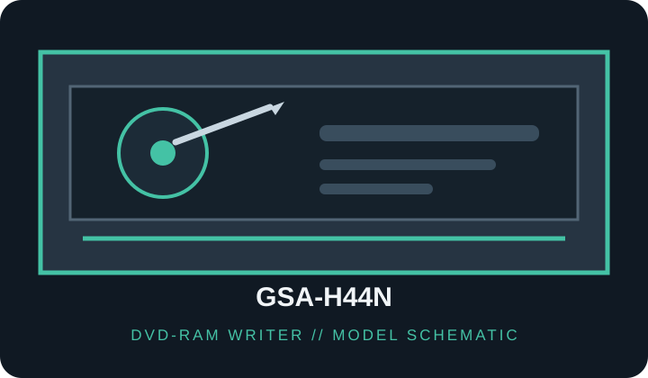

[ DVD-RAM WRITERS // IDENTIFIED MODEL ]
LG GSA-H44N Super Multi DVD Rewriter
DVD-RAM capable optical writer; verify the exact suffix and media revision. Model-specific rated speeds, media and host requirements follow. Maximum rates are media- and mode-dependent, not guaranteed sustained throughput.

IDENTIFICATION: Match the complete drive label, OEM/SKU suffix and firmware to the cited model manuals; similar names may use different interfaces, supported media and speeds.
Documented specifications
| Catalog subcategory | DVD-RAM writers |
|---|---|
| Exact model / SKU | GSA-H44N |
| Supported media formats | CD-ROM, CD-R/RW; DVD-ROM, DVD±R/RW, DVD±R DL and DVD-RAM. Consult the manual for media-type/revision limits. |
| Rated read speeds | DVD-RAM up to 12×; DVD-ROM up to 16×, CD-ROM up to 48×. |
| Rated write speeds | DVD-RAM 12×; DVD±R up to 18×, DVD+RW 8×, DVD-RW 6×, DVD+R DL up to 10×, CD-R 48×, CD-RW 32×. |
| DVD-RAM capability | DVD-RAM read/write up to 12×. |
| Interface / bay | Enhanced-IDE / ATAPI (PATA); internal 5.25-inch half-height tray drive. |
| Host compatibility | Desktop PC with 5.25-inch half-height bay, IDE/ATAPI controller, 40-pin cable and 4-pin peripheral power. Set jumper for master/slave/cable select. The manual lists legacy Windows support; current compatibility depends on BIOS/OS optical drivers and recording software. DVD-RAM packet writing/UDF requires suitable host software. |
| Model distinction | H44N is the IDE version; it is not interchangeable with SATA suffix variants such as H44L. |
Host compatibility and use notes
- Desktop PC with 5.25-inch half-height bay, IDE/ATAPI controller, 40-pin cable and 4-pin peripheral power. Set jumper for master/slave/cable select. The manual lists legacy Windows support; current compatibility depends on BIOS/OS optical drivers and recording software. DVD-RAM packet writing/UDF requires suitable host software.
- H44N is the IDE version; it is not interchangeable with SATA suffix variants such as H44L.
- DVD-RAM packet writing is not implied by hardware support alone; confirm UDF/filesystem and application support, compatible media version and cartridge restrictions.
- For preservation use, record exact label, firmware, media identifier, host controller/software, write mode and verification results; retain checksums and error logs.
Use only supported media; handle discs by the edge or center hole and store in a cool, dry case away from direct sunlight. Test and verify each recording before relying on it as an archive copy.
Sources
- LG GSA-H44N owner manualModel-specific manual for formats, ratings and host installation.
- LG GSA-H44N manual mirrorSecond model-specific manual source for cross-checking specifications.